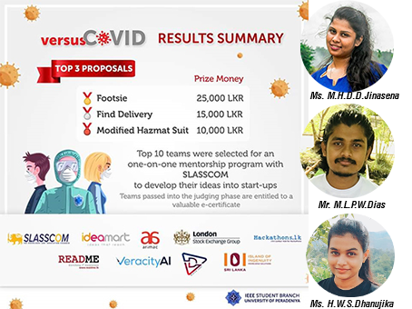

Faculty of Technology
University of Ruhuna
Faculty of Technology
University of Ruhuna
Department of Information & Communication Technology

Senior Prof. W.G.D Dharmarathne, the former Dean of the Faculty of Technology, University of Ruhuna retired from his position recently as the founder Dean of the Faculty of Technology and during his tenure he contributed to the fullest in many ways to bring the faculty to its greater heights and university at large. Apart from his service to the faculty and the university, he is also recognized as a herculean figure who immensely contributed to national development in many ways. In appreciation of his contributions made towards the upheaval of the faculty and the university, all the academic and non-academic staff members of the Faculty of Technology organized a felicitation ceremony on the 30th of September, 2020 at Solis Reception Hall in Matara, with the participation of Prof. E.P.S. Chandana, Deputy Vice Chancellor, University of Ruhuna, Dr.K.G.S.H.Gunawardana, Dean, Faculty of Technology, Mr. Aruna Lorensuhewa, the former Head of the Department of ICT, Heads of the other three departments along with the academic and non-academic staff members of the Faculty of Technology.

Collaboration between universities and industries is critical important for skills development through education and training and adoption of knowledge through innovation and technology transferring. In producing an internationally accredited Technologist in the field of Information and Communication Technology, the Department of ICT has recently formed an Industrial Consultative Committee (ICC) in order to provide students with the necessary technical and professional skills to face the challenges and adapt better for the rapidly changing phases of the highly competitive job market in today's world. In the accomplishment of this mission, the role of ICC is of immense importance as it plays a vital role in ensuring that our degree program, curriculum and academic activities stay aligned with the desired capacity and industrial requirements leading to the production of a high-quality professional graduates.Academics and students of the Department wish to maintain a wide range of industrial collaboration portfolios like consultancy appointments, student participation in industrial collaboration projects, internships and visiting lectures etc.
The COVID 19 pandemic has created a real predicament, where the entire human population facing one of the deadliest challenges the world has ever encountered. Individuals and organizations are running after solutions for the problems it has created, paving the way for many innovations and inventions around the world. In times like these, Sri Lankan universities too have stepped up to the plate in various capacities to ensure the fight against this virus isn't fought alone. Whilst the government of Sri Lanka has delayed and re-scheduled the initially planned election to protect voters, a group of students from the Department of Engineering Technology, Faculty of Technology, University of Ruhuna have developed an 'Automated Small Finger Marker' to aid officials to mark voters in an election. This machine has the capability to mark the small finger of a voter automatically and display the total number of voters on an LCD screen. Also, it is automatically sanitized after one use and the next voter and use it safely without the fear of contamination.

A group of undergraduates of the Faculty of Technology, University of Ruhuna, has won third place in Versus COVID Competition organised by the IEEE Student Branch of the University of Peradeniya. They have won this place for their project proposal for making a Modified Hazmat Suit with Controllable Inside Temperature. M. H. D. D. Jinasena, M. L. P. W. Dias, and H. W. S. Dhanujika are the members of the winning team. A hazmat suit is the main personal protective equipment worn by all healthcare professionals including physicians, nurses, and attendants who treat COVID 19 patients. Since no specific treatment is available up to date for preventing COVID 19 infection, healthcare measures play a vital role in minimising its spread. However, the hazmat suit currently worn by healthcare professionals in Sri Lanka is not very comfortable. Wearing it all the daylong may lead to complete exhaustion seriously affecting the efficiency and quality of their job performance.The Modified Hazmat Suit proposed by Ruhuna undergraduates has been designed to cater to this need.
- Interfaculty Drama Competition - 2020
- Dean's award - 2020
- Sports Event - 2020
- Thai Pongal Celebration - 2020
- Pirith Chanting Ceremony - 2019
- Sarasavi Prathibha 2018-2019
- Congratulations Methdasun ....!!!
- The inauguration ceremony - 3rd Batch
- Tree Planting Campaign - 2018
- Awareness programme on HIV AIDS - 2018